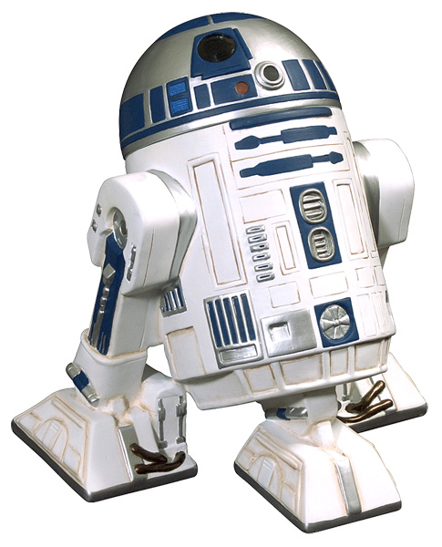
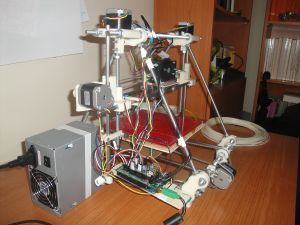
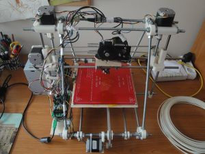
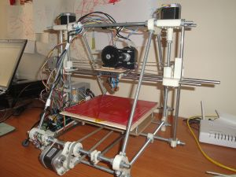
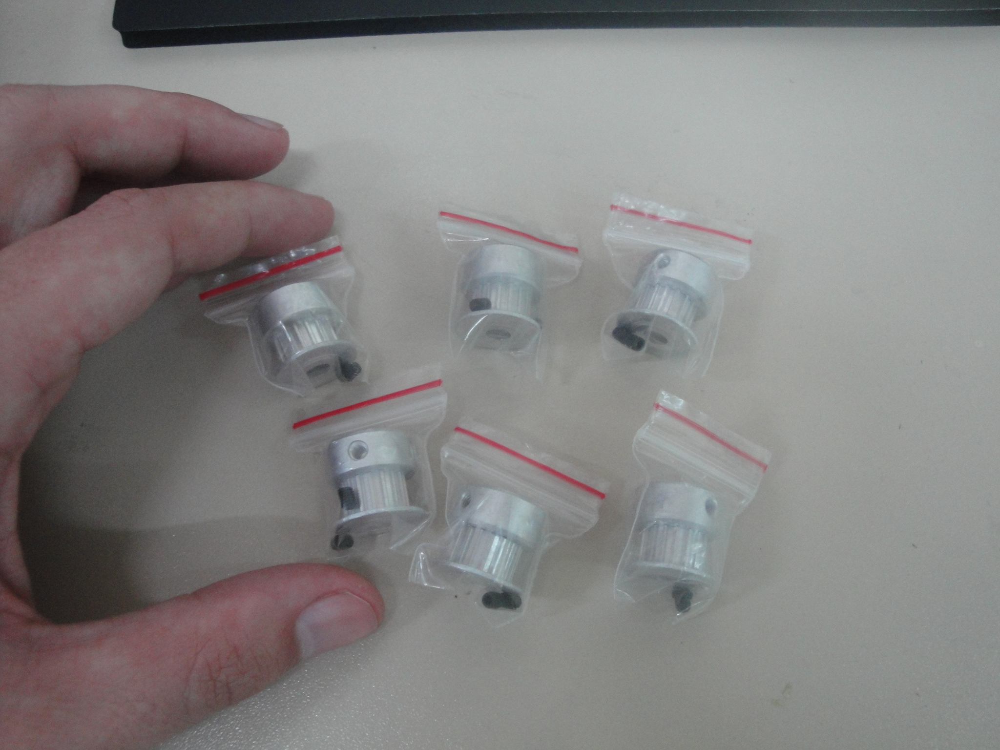
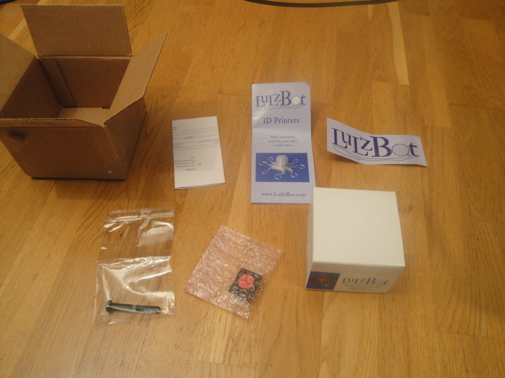
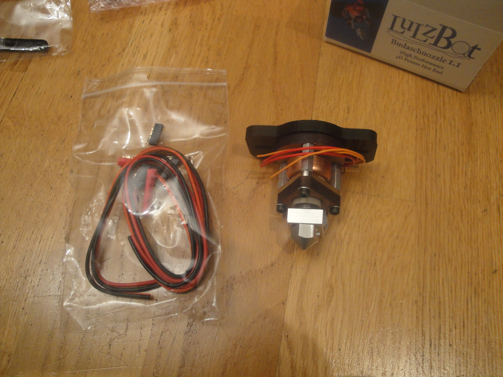

Contenido
[ocultar]Introducción
Impresora 3D construida desde cero en el proyecto Clone Wars. R2D2 es la primera generación de impresoras clonables. Es hija de R1
Méritos
| |
| |
| |
| |
| |
| |
| |
Ficha

|
|
 |
Autores
- Juan González Gómez (Obijuan)
- Andrés Prieto-Moreno
Fotos
| Álbum de fotos en google+ |
|---|
|  (Click para ampliar) |
 (Click para ampliar) |
 (Click para ampliar) |
Vídeos
|
01/Ene/2012: Impresión de un cubo |
24/Dic/2011: ¡Primera impresión! |


|
20/Dic/2011: Probando el extrusor |
18/Dic/2011: Probando electrónica y motores |


Descargas
Firmware
| Sprinter-R2D2-firmware-0.2.zip | Versión 0.2. Calibrado realizado. Con este firmware se han impreso todas las piezas de la Prusa iteración 2 en R2D2 |
| Sprinter-R2D2-0.1.zip | Versión inicial. Todo el hardware funciona. No se ha realizado calibrado |
Software
| Printrun-SF41.zip | Software PrintRun + Skeinforge 41 para Linux. Incluye la carpeta test con piezas para probar la Prusa: moneda, cubo de calibración, etc... |
Perfiles
Los perfiles están basados en los que ha hecho Renosis: Perfiles para skeinforge 41, que me facilitó Fernando Salceda.
| R2D2_SF41_dot_skeinforge.zip | Perfil para Skeinforge 41 para imprimir en ABS en R2D2. Este es el pefil que se ha usado para imprimir todas las piezas de la Prusa Iteración 2. Renombrar la carpeta a .skeinforge y ponerla en el HOME |
Pruebas
| imperial.gcode | GCODE para tocar la marcha imperial en una Prusa. |
- Colocar el extrusor en el centro de la plataforma
- Abrir el gcode y ejecutarlo!
Actualizaciones para R2
- Upgrade de la rueda dentada a "Rebel alliance Gear"
- Probar slic3r
- Upgrade del firmware a Marlin
-
Poner polea metálica T5 en eje x -
Poner belt-clamps de la Prusa 2 en eje x -
Poner rodamientos lineales en eje Y -
Upgrade del extrusor al de la Prusa 2 -
Poner disipadores a los pololu -
Ajustar la corriente del eje Y -
Poner rodamientos lineales en el eje x -
Poner bearing guides de la prusa 2 en el eje y -
Upgrade al último skeinforge -
Poner poleas metálicas T5 en eje y -
Poner belt-clamps de la Prusa 2 en eje y -
Solucionar backlash! -
Quitar disipador extra-grande -
Poner bearing guide de la prusa 2 en eje X -
Pone espejo de Ikea
Historia
- 28/Agosto/2012: R2D2 se ha reencarnado en R2-Reloaded. Por tanto ya no tendrá más descendencia, pero todavía están pendientes de construcción los 6 juegos adicionales que donó, mientras estaba en vida. Así que como máximo tendrá 6 hijos más :-)
- 26/Junio/2012: Ha nacido otro hijo más: Xwing
- 01/Junio/2012: Ya tengo las 6 poleas T2.5 que me ha dado César Fernández
|
 |

- 30/Mayo/2012: Ya me ha llegado el Budas 1.1! Además de un Hobbed bold nuevo y un adaptador de tarjetas SD para la RAMPS
|
 |
 |


- 22/Mayo/2012: He encargado un Budaschnozzle 1.1 + hobbed bold + SD board en lulzbot: 195€
- 07/Mayo/2012: Ha nacido Han, el Clon de Andrés Prieto-Moreno, por lo que R2D2 asciende a la categoría de Máster de la orden Jedi
- 05/Mayo/2012: R2 ha tenido otro hijo: Úterus. R2 asciende a la categoría de Consejero Jedi supremo!!
- 04/Abril/2012:
- R2 ha vuelto a la vida. Le he puesto el arcol v4 con aguja de 0.35 que compré hace tiempo. Ha impreso algunas piezas en negro. El extrusor lo he actualizado al de la Prusa 2 (Greg's extruder), impresor por R3
- (Blog) R2 y R3 forman parte de la Obigranja! Es la primera vez que imprimen en paralelo!


- 03/Abril/2012: Montado el nuevo extrusor para R2, impreso por R3


- 01/Abril/2012: R2 ha tenido un hijo: R3. Por tanto R2 asciende a Consejero Jedi!!
- 30/Marzo/2012: Andrés ha recibido los peek insulators en USA. El día 7 me los manda para España.
- 25/Marzo/2012:
- Tras unas 250 horas de impresión, el EXTRUSOR SE HA ROTO!. Se ha partido el peek insulator. Sólo cuesta $7, pero hay que comprarlo en USA. Ya se lo he encargado a Andrés Prieto-Moreno (que está viviendo allí)
- Andrés ya ha hecho el pedido (2 peek insulators). En 5 ó 6 días lo recibirá en su casa de USA, y sobre el 7 de Abril David Rubio traerá las piezas a España.

- 24/Marzo/2012: Upgrade de R2:
- Aplanado el eje del motor del eje Y
- Cambiada la polea del eje Y por una metálica (T5)
- Eliminado el problema de backlash!!! Ahora los círculos ya son círculares por fin (y no ovalados)!
- Añadidos los "belt clamps" de la Prusa 2 (con las tuercas empotradas). Ahora es más fácil tensar la correa del eje Y
- Añadidos 8 "thumbscrews" a las tuercas de la base inferior. Ahora es más fácil nivelar la plataforma.
- Colocado el espejo de Ikea.
- Con estas mejoras, la calidad de la impresión de R2 ha mejorado notablemente


- 22/Marzo/2012: Entregado el décimo juego de piezas, a Daniel casares

- 19/Marzo/2012: Segundo rollo de plástico de 2.3Kg terminado. Sustituido por otro (el último que queda del pedido pasado)
- 16/Marzo/2012: Sustituido el rodamiento del eje x por un bearing guide de la prusa 2. Ahora la correa no roza con las arandelas metálicas que hacían de guía
- 09/Marzo/2012:
- Impreso el décimo juego de piezas, para Daniel Casares, estudiante de industriales de la UPM. Con este juego he decidido Jubilar a R2 (ya no voy a imprimir más juegos, salvo para casos excepcionales). Imprimir 10 juegos me ha servido para comprobar la fiabilidad de la Prusa. Han sido muchas horas de impresión, y R2 ha podido con ellas.
- Jose Manuel Escuder (Castellón) ha recibido las piezas
- Impresas 2 piezas para Mario Almagro. Tiempo total: 3h
- Impreso extrusor para Carlos García
- Impresas 4 poleas de extrusor para Fernando Salceda (Clon Deathstar)


- 08/Marzo/2012:
- Andrés Prieto-Moreno ha recibido las piezas, en Santa Bárbara (USA). Ya puede empezar a montar su clon :-)

- 07/Marzo/2012: Juego de piezas enviado a Jose Manuel Escuder, en castellón (por Correos)
- 06/Marzo/2012: Impreso el noveno juego de piezas, para Jose Manuel Escuder Martínez (Clon Ahsoka Tano, Castellón)


- 04/Marzo/2012:
- Entregado el juego de piezas a Ricardo Gómez (clon EA4-A)
- Enviadas las piezas a Andrés Prieto-Moreno (Clon Han, en Santa Bárbara, USA)

- 03/Marzo/2012: Listo el juego de piezas de la Prusa 2 para EA4-A, el clon de Ricardo gómez. ¡¡Es el octavo juego!!


- 02/Marzo/2012: Listo el juego de piezas de la Prusa 2 para Han, el Clon de Andrés Prieto Moreno (En santa bárbara, California, USA). ¡¡Es el séptimo juego!!


- 26/Febrero/2012:
- Impresas 3 patas para el cuadricóptero de Robcib. Tiempo de impresión: 5 horas y 12 minutos (1h y 44min cada una)
- Decorando un poco a R2 ;-)


- 25/Febrero/2012:
- Entregado el Juego de piezas a Carlos Menéndez (Clon: The Manx)
- Impreso un molde para la Prusa Mold, diseñado por César Augusto Fernández


- 24/Febrero/2012: Impreso el juego completo de piezas de la Prusa 2 para Carlos Menéndez (¡Es el sexto juego!)

- 21/Febrero/2012:
- Entregado el juego completo de piezas de la printrbot a Javier del Álamo
- Entregadas las piezas de la printrbot a Nieves Cubo para completar su Printrbot


- 18/Febrero/2012:
- Ya está listas todas las piezas de la Printrbot de Javier del Álamo. Ya llevo impresos 5 Juegos de impresoras (4 Prusas 2, 1 Printrbot)
- Impresas piezas para el Clon de Nicuma (una printrbot): dos bases, un x-motor, y un x-carriage.
- R2 se ha fundido el primer rollo de 2.3Kg de plástico. He puesto un rollo nuevo de ABS blanco-natural de German Reprap Foundation


- 17/Febrero/2012:
- Abraham Alvaro Jiménez me ha confirmado que ha recibido las piezas que le envié (a Zamora)
- Javier Rodríguez (Almería) me confirma que ha recibido el paquete con las piezas de la Prusa
- 15/Febrero/2012:
- Enviadas las piezas a Abraham Alvaro Jimenez de Zamora
- Entregada la pieza a Mario Almagro
- Entregadas las piezas a Santiago López
- Impresa una pata del cuadricóptero del DISAM. Diseñada por David Sanz. Tiempo: 1h y 46 minutos

- 14/Febrero/2012: Impresas 3 bearing guides y 2 belt clamp with nut holder para Abraham Alvaro Jimenez de Zamora.
- 13/Febrero/2012:
- Piezas enviadas a Javier Rodríguez (Almería). Correo ordinario. Precio: 4.5€
- Impresas dos poleas T2.5 para Úterus y entregadas. Hay que probar si funcionan bien.


- 12/Febrero/2012:
- Impresa la pieza del cuadricóptero de Miguel Angel de Frutos. Ha tardado 3 horas y 28 minutos. Es el record de la pieza más grande que he impreso nunca!!!
- Terminado el juego de piezas para Javier Rodríguez (de Almería). R2 ya ha impreso 4 juegos completos!
- Impreso otro engranaje más "Alianza rebelde" de David Estévez


- 6/Febrero/2012:
- (blog) Primera auto-reparación de R2. Se ha roto el engranaje pequeño del extrusor. Tiempo de vida: unas 70 horas. Se ha sustituido por uno de la iteración 2 y ya está funcionado. Se ha aprovechado para atornillarlo al eje del motor en vez de pegarlo con pegamente bicomponente (poxypol).
- Todas las piezas para el clon Úterus de Cole están terminadas. ¡R2D2 ya ha impreso 3 juegos completos de piezas!!. Se han entregado
- Impresas 2 piezas más del humanoide de Fernando Remiro
- Impresa una pieza para Mario Almagro. Ha tardado 1h y media.


- 5/Febrero/2012: Ya están listas las 3 "bearing guides" para el clon de Santiago López


- 4/Febrero/2012: Impresas todas las piezas del humanoide de Fernando Remiro

- 3/Febrero/2012:
- Impresas las primeras piezas de Úterus, el clon de Juanma amuedo (Cole)
- Impresas dos piezas para el Robot de Fernando Remiro
- Hito importante: primera entrega de piezas de Prusa de un clon para la construcción de otro clon


- 2/Febrero/2012:
- Juego de Piezas de Miguel Angel de Frutos Terminado!. R2D2 Ya lleva 2 juegos completos impresos!
- Se empiezan a imprimir las piezas para el clon Úterus de Juan Manuel Amuedo (Cole)


- 31/Enero/2012: (Blog) (Youtube) R2D2 tocando la marcha imperial de Star wars
- 30/Enero/2012: Impresas 3 Bearing Guides para la Prusa de Juan Manuel Herrera López de Sevilla (enviadas por correo ordinario). Actualización: 4/Feb/2012: Juan Manuel me ha confirmado que ha recibido las piezas

- 29/Enero/2012:
- Se empiezan a imprimir las piezas para el clon de Miguel Angel de Frutos (Aerobot)
- Impreso una pieza para sacar un molde de silicona de las "bar clamps" de la Prusa
- Impresas las piezas: Doblador de componentes y soporte para auriculares
- Doblador de componentes (click para ampliar)Soporte para auriculares (click para ampliar)


- 18/Enero/2012: (Blog) Todas las piezas de R3 impresas! El Clon R2D2 sube a la categoría de Jedi Máster :-)


- 02/Enero/2012: Se empiezan a imprimir las piezas de la nueva impresora R3 (Generation 2!)
- 31/Dic/2011: (Blog) R2D2 ha impreso muchas piezas :-)
|
- 21/Dic/2011: ([1]) R2D2 ya está extruyendo! Se ha sustituido el hot end por un Budaschnozzle de Makergear, comprado en Lulzbot.
- 11/Dic/2011: (Blog) El clon R2D2 está terminado!! Aunque todavía no está imprimiendo por problemas con el extrusor.Probablemente el hot-end esté obstruido.
- 04/Octubre/2011: (Blog) El eje X del Clon R2D2 ya está funcionando!! Todos los ejes están operativos!!! :-)
- 19/Septiembre/2011: (Blog) El eje Z del Clon R2D2 ya está funcionando!!
- 14/Septiembre/2011: (Blog) El eje Y del Clon R2D2 ya está funcionando!!
- 31/Mayo/2011: (Blog) Ha llegado el pedido de xyzprinters!
- 03/Mayo/2011: (Blog) Más piezas impresas:
- PLA bushings x 12 (4 min)
- X end idler x 1 (1h 33 min)
- X end motor x 1 (1h 51 min)
- Rod Clamp x 2 (6 min)
- Coupling x 2 (14 min)
- X carriage x 1 (1h)
- Endstop holder x 3 (9 min)
- 15/Abril/2011: (Blog) Completadas las partes 4 y 5: Colocadas las varillas de la parte superior. Apretadas todas las tuercas.
- NOTA: Al apretar las tuercas la estructura cojeaba bastante. Para evitarlo he tenido que hacerme dos varas de madera de longitudes 290mm y 234mm para que todas las distancias sean exactamente iguales. La estructura ha mejorado mucho.
- 12/Abril/2011: (Blog) Completada la parte 3 de las instrucciones: Ensambladas las varillas traseras
- 11/Abril/2011: (Blog) Completada la parte 2 de las instrucciones. Montaje de las varillas frontales. Ya se vislumbra la impresora :-)
- 10/Abril/2011: (Blog) Más piezas impresas: Y motor bracket x 1 (28 min), z motor mount x 2 (1h 10min), Pulley x 2 (9 min), Belt-clamp x 4 (3 min)
- 09/Abril/2011: (Blog). Realizada la parte 1 de las instrucciones: montados los dos bastidores triangulares laterales. Es extremadamente fácil!!! (una vez que se tienen las piezas)
Piezas usadas:
- 6 varillas roscadas M8 de 370mm
- 2 vértices de bastidor
- 4 vértices de bastidor con pie
- 2 abrazaderas de barra
- 14 tuercas M8
- 14 arandelas M8
- 08/Abril/2011: (Blog). Ya están cortadas las varillas roscadas. En total se necesitan 16, de los tamaños que están documentados en la sección de material.
- 06/Abril/2011: Hemos comprado 10 varillas roscadas M8 de 1m, a 0.80€ cada una, 100 tuercas M8 (5€) y 100 arandelas M8 (5€). Coste total: 18€. Tienda: Ferretería Imán, en Leganés
Piezas compradas:
- 10 varillas roscadas, M8, 1m de largo
- 100 Tuercas M8
- 100 Arandelas M8
- 5/Abril/2011:(Blog) Clon R2D2: Ya tenemos impresas 14 piezas en color blanco y plástico ABS.
Enlaces
- Impresora R3
- Budaschnozzle
- Comprar Budaschnozzle en Lulzbot
- Midi-to-CNC git repository. Para generar canciones tocadas por la impresora
|
|
Proyecto Clone Wars |